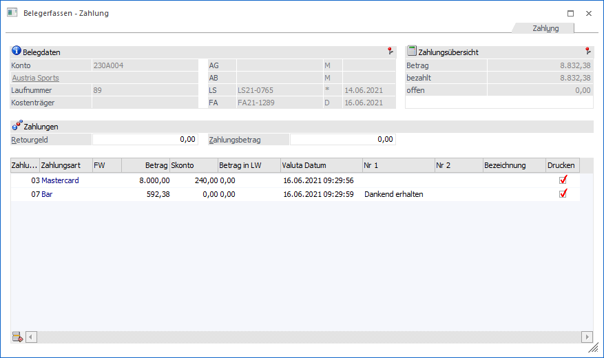
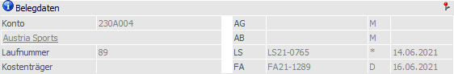
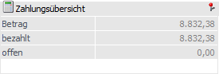
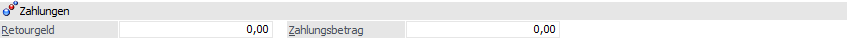
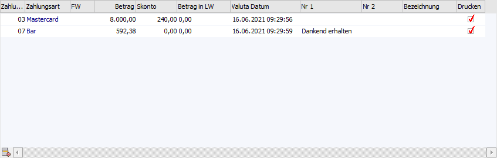
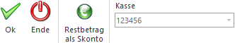

Mit Hilfe des Register "Zahlung" kann eine Faktura sofort ausgeglichen oder für z.B. Aufträge eine Vorauszahlung getätigt werden.
Achtung
Damit die Zahlung gleich nach dem Belegdruck eingegeben werden kann, muss in der betreffenden Belegart im Register "Zahlungen" die Option "Zahlung erlauben" aktiviert worden sein.
Ist die Option aktiv, kann bei dieser Belegart unmittelbar nach dem Rechnen eines Auftrages, eines Lieferscheines oder einer Faktura eine Zahlung durchgeführt werden. Dazu muss natürlich auch bei mindestens einer Zahlungsart die Checkbox "Auswahl" aktiviert sein.
Wurde zusätzlich ein "Standard-Zahlungsart" definiert, so wird beim Speichern einer Faktura diese sofort gerechnet und es wird automatisch das Zahlungsfenster gewechselt.
Die erzeugten Buchungssätze sind wiederum abhängig von der Buchungsart, welche in der Belegart hinterlegt wurde:
ü Buchungsart DF (Debitoren
Faktura)
Es wird eine DF mit OP erstellt. Wird auch die Zahlung gleich
durchgeführt, wird eine DZ - als Vorauszahlung - mit Ausgleich bzw.
Teilausgleich der OP erstellt.
ü Buchungsart KF (Kreditoren
Faktura)
Es wird eine KF mit OP erstellt. Wird auch die Zahlung gleich
durchgeführt, wird eine KZ - als Vorauszahlung - mit Ausgleich bzw.
Teilausgleich der OP erstellt.
Hinweis
Weitere Informationen bezüglich des Erfassens von Belegen und den Buttons des Programms "Belegerfassen" sind dem Kapitel Belegerfassen zu entnehmen.

Folgende Informationen und Eingabemöglichkeiten stehen zur Verfügung.
Belegdaten

Im Bereich "Belegdaten" werden die Daten des aktuellen Belegs angezeigt.
Zahlungsübersicht

Ø Betrag
An dieser Stelle wird der Gesamtbetrag des Belegs angezeigt.
Ø bezahlt
Anzeige, welcher Teil des Rechnungsbetrages wurde schon einer Zahlungsart zugeordnet wurde.
Ø offen
Anzeige, welcher Teil des Rechnungsbetrages wurde noch keiner Zahlungsart zugeordnet wurde und ist daher noch ausständig.
Zahlungen

Ø Retourgeld / Zahlungsbetrag
Wenn die Felder "Retourgeld" und "Zahlungsbetrag" gewünscht sind, können diese eingeblendet werden, indem die Option "Eingabe von Retourgeld in allen Zahlungsfenstern" in den "FAKT-Parametern" unter "Belege/Erweiterte Optionen" aktiviert wird. Nähere Infos zu dieser Einstellung können aus dem "START-Handbuch" entnommen werden.
Tabelle "Zahlungen"

In der Tabelle "Zahlungen" werden die Zahlungen für den Beleg erfasst. Grundsätzlich wird immer die Zahlungsart aus dem Belegerfassen (wenn eine hinterlegt wurde) vorgeschlagen. Diese Zahlung kann noch editiert werden. Jede Faktura kann mit beliebig vielen Zahlungsarten ausgeglichen werden. Im Zahlungsmodul haben Sie auch die Möglichkeit nur einen Teil der Faktura auszugleichen, z.B. wenn eine Anzahlung gemacht wird.
Ø Zahlungsart
Aus der Auswahllistbox kann eine Zahlungsart ausgewählt werden. Pro Beleg sind auch mehrere Zahlungsarten erlaubt.
Ø Zahlungsbetrag
Hier wird der Zahlungsbetrag eingetragen, der mit der Zahlungsart bezahlt wurde. Wurde ein Beleg in Fremdwährung erstellt, wird hier bereits der Betrag in Landeswährung 1 vorbelegt. Bei der Umrechnung wird natürlich die im FW-Stamm angegebene Notierung berücksichtigt.
Ø Valuta-Datum
Hier kann das Valuta-Datum der Zahlung verändert werden.
Ø Nr. 1/Nr. 2
Hier können zusätzliche Texte (wie z.B. Kreditkartennummer und Gültigkeit der Kreditkarte) eingetragen werden.
Ø Drucken
Ist die Checkbox aktiv, wird für diese Zahlungsart ein Beleg gedruckt. Welcher Beleg gedruckt wird, hängt von der Einstellung der Zahlungsart ab.
Buttons

Ø Ok
Durch Drücken des Buttons "Ok" bzw. der Taste F5 werden die Eingaben gespeichert und der Beleg sofort gedruckt oder für den Stapeldruck vorgemerkt.
Achtung
Eine Speicherung ist nur möglich, wenn es keinen aufzuteilenden Betrag mehr gibt (d.h. Saldo = 0,00).
Ø Ende
Durch Drücken des Buttons "Ende" bzw. der Taste ESC wird das Fenster geschlossen und alle durchgeführten Änderungen verworfen.
Ø Restbetrag als Skonto
Mit Hilfe dieses Buttons wird in der Tabelle "Zahlungen" eine Zahlungszeile über den offenen Restbetrag erzeugt, wobei der Betrag in das Feld "Skonto" geschrieben wird.
Ø Kasse
Aus der Auswahlliste kann, sofern in den Kassenstammdaten mehrere Kassen angelegt wurden, eine definierte Kassenidentifikationsnummer gewählt werden. Hierüber kann dann gesteuert werden, in welchem DEP (Datenerfassungsprotokoll) der Beleg erscheinen soll.
Hinweis
Die zuletzt gewählte Kassenidentifikationsnummer wird benutzerspezifisch gespeichert.